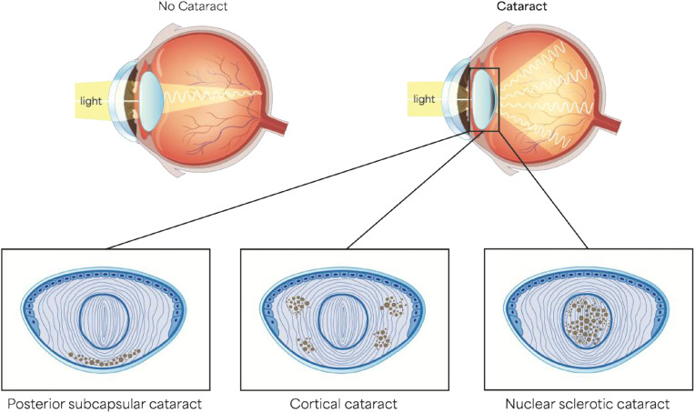
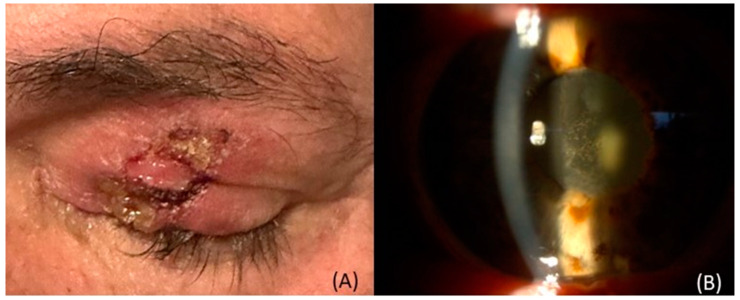
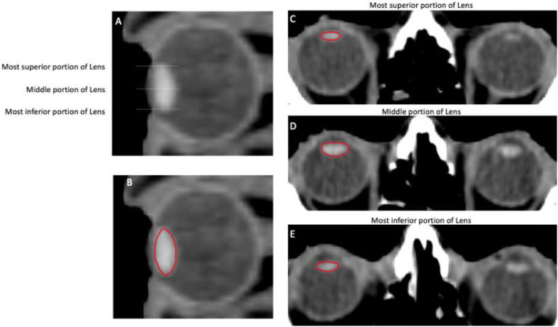
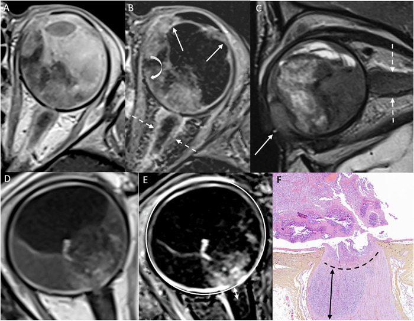

6214 — Đục thể thủy tinh do xạ trị u nguyên bào võng mạc ở trẻ / Radiation-induced cataract after retinoblastoma radiotherapy
Tags: pattern:duc-the-thuy-tinh pattern:duc-duoi-bao-sau pattern:che-truc-quang pattern:leukocoria pattern:manh-xo-dong-tu vung:the-thuy-tinh vung:mat vung:retinoblastoma score:LOCS-III protocol:MRI-hoc-mat protocol:sieu-am-B-scan protocol:Scheimpflug protocol:EUA protocol:lens-contouring incidentaloma:khong
Mức chắc chắn (certainty): tổng hợp y văn (literature synthesis) — dựng từ tổng quan hệ thống 2026 về sinh đục thể thủy tinh do xạ và contour thấu kính (Adv Radiat Oncol 2026, PMC13315199, CC BY 4.0), hướng dẫn hình ảnh RB 2025 của mạng lưới châu Âu (Eur Radiol 2026, PMC12953368, CC BY 4.0), đoàn hệ 184 mắt RB điều trị bảo tồn (Br J Ophthalmol 2024, PMC10958276, CC BY-NC), 6 mắt RB mổ đục thể thủy tinh sau xạ (Turk J Ophthalmol 2018, PMC6032962, CC BY 4.0), 198 mắt đo thể thủy tinh bằng DECT (Diagnostics 2022, PMC9689271, CC BY 4.0), tổng quan biến chứng xạ u hắc mạc (Curr Oncol 2023, PMC10378371, CC BY 4.0) và tổng quan phẫu thuật đục thể thủy tinh nhi 2025 (Asia Pac J Ophthalmol 2025, PMC12399275, CC BY-NC-ND). Nhóm không có bệnh nhân của mình; chỗ chưa đủ chắc ghi "chưa rõ". Không ghi tên tác giả — attribution dùng tạp chí + năm + PMCID.
Câu chốt: Trên mắt RB đã xạ, đục thể thủy tinh là di chứng muộn, gần như không tránh được ở liều cao: xạ toàn nhãn cầu 71,1% so với xạ chừa thấu kính 35,3%, trung bình 51,8 tháng sau xạ (liều thấu kính trung vị 37,53 Gy so với 9,93 Gy). Năm con số phải thuộc: (1) ICRP lấy 0,5 Gy làm ngưỡng đục thấu kính phát hiện được, nhưng phân liều và suất liều làm thay đổi ngưỡng và chưa có ngưỡng phân liều đồng thuận; (2) đục do xạ điển hình là dưới bao sau (PSC), tiềm tàng 2–5 năm ở liều cao và 5–10 năm hoặc hơn ở liều thấp — nên "mắt RB sạch u 3 năm" không loại trừ đục; (3) 5 năm sau xạ, 20–25% đục khi liều thấu kính trung bình 7 Gy; (4) sau xạ trị RB, đục thể thủy tinh che mất tầm nhìn đáy mắt — phải loại trừ tái phát u bằng siêu âm/MRI trước khi gọi là "chỉ đục thể thủy tinh"; (5) mổ đục thể thủy tinh sau xạ RB có thể làm, cấy IOL được, nhưng đục bao sau 100%, viêm màng bồ đào 2/6 mắt, và ca mổ trung vị 96,3 tháng sau chẩn đoán RB (67,2 tháng sau lần điều trị RB cuối).
1. Tổng quan bệnh học – cơ chế hình ảnh
1.1 TẠI SAO thể thủy tinh "chết dần" sau xạ
- Thể thủy tinh là mô không mạch, không có khả năng thay thế tế bào: sợi thủy tinh thể (lens fibers) được sản xuất một lần rồi tồn tại suốt đời; tế bào biểu mô (lens epithelium) nằm dưới bao trước, phân chia mạnh nhất ở vùng mầm (germinative zone) sát xích đạo. Vì không có mạch máu, không có dòng bạch cầu đến dọn tế bào hỏng và không có cơ chế sửa chữa tại chỗ — tổn thương DNA tích lũy và chỉ biểu hiện khi số sợi dị dạng đủ nhiều để tán xạ ánh sáng.
- Cơ chế phân tử: tia ion hóa gây đứt sợi kép DNA ở tế bào biểu mô vùng mầm; tế bào còn sống nhưng biệt hóa lệch — thay vì tạo sợi trong suốt, chúng di chuyển ra sau dọc bao và tích tụ sợi thủy tinh thể phồng, giàu protein bất thường ở cực sau. Protein crystallin bị oxy hóa/kết tụ tạo phức hợp phân tử lớn; chỉ số khúc xạ không đồng nhất → tán xạ ánh sáng (light scattering) thay vì truyền qua.
- TẠI SAO lại là "dưới bao sau" (PSC): bao sau mỏng nhất ở cực sau (dày nhất ở xích đạo), nên đây là nơi sợi dị dạng dễ tích tụ và dễ nhìn thấy nhất; đồng thời PSC nằm đúng trục quang, nên chỉ một đám mờ nhỏ cũng làm chói và giảm thị lực gần nhiều hơn một đục vỏ ngoại vi cùng kích thước. Đục do xạ có thể gặp cả vỏ (cortical) và nhân (nuclear sclerotic), nhưng PSC là hình thái đặc trưng nhất.
- TẠI SAO có "thời gian tiềm tàng" dài: đây là phản ứng mô xác định (deterministic), không phải hiệu ứng ngẫu nhiên tức thì; tổn thương phải tích lũy qua nhiều chu kỳ tế bào và mất dần khả năng bù trừ của biểu mô. Vì vậy liều càng cao, tiềm tàng càng ngắn, và phân liều làm giảm cả tần suất lẫn tốc độ (tế bào có thời gian sửa chữa giữa các phân liều).
1.2 Những con số quyết định cách theo dõi
| Bối cảnh | Liều thấu kính | Đục thể thủy tinh | Tiềm tàng |
|---|---|---|---|
| RB – xạ toàn nhãn cầu | trung vị 37,53 Gy | 71,1% số mắt | trung bình 51,8 tháng |
| RB – xạ chừa thấu kính | trung vị 9,93 Gy | 35,3% số mắt | trung bình 51,8 tháng |
| Người sống sót RB trưởng thành | 5–22 Gy so với < 2,5 Gy | mổ đục gấp 6 lần | — |
| Xạ bản mạch hắc mạc (COMS) | trung bình 7 Gy | 20–25% trong 5 năm | ngắn hơn khi liều cao |
| Proton liều cao, phân liều ít | — | 15% đục, 9% phải mổ | trung vị 1,6–2,3 năm |
| Xạ toàn thân ở trẻ | 6–12 Gy | 50–90% trong 10 năm | giảm 3 lần nếu che mắt |
- Ngưỡng: ICRP đề xuất ~0,5 Gy cho đục thấu kính phát hiện được, nhưng nhiều nghiên cứu dịch tễ cho thấy có thể thấp hơn; chưa có ngưỡng phân liều được đồng thuận — đây là lý do các tác giả 2026 kêu gọi ghi liều thấu kính chuẩn hóa thay vì chỉ nói "có xạ vào mắt".
- Tuổi là yếu tố nhạy cảm: phơi nhiễm trước 20 tuổi có quan hệ liều–đáp ứng mạnh hơn; trẻ < 3 tuổi có thể đục sớm và nặng hơn vì thể tích nhãn cầu nhỏ, thấu kính gần trường chiếu hơn, và còn nhiều năm sống để biểu hiện.
- Phân liều/suất liều: cùng tổng liều, chia nhiều phân liều nhỏ làm giảm tổn thương thấu kính; suất liều cao (xạ bản mạch, proton liều cao mỗi phân) rút ngắn tiềm tàng.
- Không phải mọi đục trên mắt RB là do xạ: đoàn hệ 184 mắt điều trị bảo tồn (chủ yếu hóa trị nội động mạch – IAC và nội nhãn – IvitC) có 16,8% đục sau trung bình 27,6 tháng; yếu tố độc lập là nhãn áp cao (p = 0,003), liều melphalan mỗi chu kỳ IAC (p = 0,001) và số chu kỳ IvitC (p = 0,04). Vì vậy khi đọc "đục sau điều trị RB", phải tách phần xạ và phần thuốc.
1.3 TẠI SAO hình ảnh trông như vậy (CT – MRI – siêu âm – Scheimpflug)
- CT: thể thủy tinh là cấu trúc đậm nhất trong nhãn cầu bình thường — đo trên 198 mắt bằng DECT, thể thủy tinh tự nhiên ~74–79 HU ở 70 keV, trong khi dịch kính ~0 HU. Khi đục do nước vào sợi thủy tinh thể, độ đậm giảm (hypoattenuating). Hệ quả kép: (a) trên CT vẫn thấy vị trí thể thủy tinh nên phát hiện trật/cắt thể thủy tinh, nhưng (b) CT không dùng để chẩn đoán hoặc phân độ đục — và với RB, CT không còn được khuyến cáo vì độ nhạy/phân giải mô mềm thấp và chính nó thêm liều xạ cho trẻ có đột biến RB1.
- CT trong lập kế hoạch xạ (không phải trong chẩn đoán RB): thấu kính được contour toàn bộ trên lát 1–2 mm, ghi Dmax và Dmean, kèm số phân liều và suất liều; đây là dữ liệu để so sánh các nghiên cứu về ngưỡng đục.
- MRI: thấu kính giảm tín hiệu mạnh trên T2 (protein đậm đặc, ít nước tự do) và trung gian trên T1, nên không dùng MRI để phân độ đục. Giá trị thật của MRI trong RB là khối u: xâm lấn màng bồ đào, củng mạc, tiền đoạn/thể mi, thần kinh thị sau lá sàng. Hướng dẫn 2025: CT không còn khuyến cáo; MRI T1 sau tiêm oblique axial ≤ 2 mm, ≤ 0,3 × 0,3 mm, DWI hốc mắt ≤ 4 mm, 3D T1 sau tiêm toàn não 1 mm, trục sống ≤ 3 mm khi nghi lan thần kinh.
- Siêu âm: đầu dò tần số cao tới 22 MHz cho thấy khối tăng hồi âm từ võng mạc + bóng lưng do vôi hóa vi thể — gần như đặc hiệu cho RB. Khi phương tiện trong suốt bị đục (đục thể thủy tinh, xuất huyết dịch kính), siêu âm là cửa sổ thay thế để tìm khối u và loại trừ tái phát.
- Scheimpflug (Pentacam): chụp cắt quang học tiền đoạn, cho bản đồ mật độ thấu kính định lượng, giảm dao động giữa người đọc so với LOCS III trên đèn khe; hữu ích để theo dõi tiến triển và so sánh chuỗi ảnh trong nghiên cứu.
- Đèn khe + LOCS III: phân độ NO1–NO6 (nhân), NC1–NC6 (màu nhân), C1–C5 (vỏ), P1–P5 (dưới bao sau). Ba hình thái cần phân biệt trên đèn khe — dưới bao sau (PSC), vỏ (cortical) và nhân (nuclear) — được vẽ ở hình dưới; đục do xạ hay gặp PSC nhất:

- PSC độ 2–3 ở trục quang có thể là ngưỡng chức năng để cân nhắc mổ ở trẻ còn cửa sổ nhược thị (suy luận — LOCS III không có ngưỡng mổ chính thức). Phân độ không quyết định mổ một mình — quyết định dựa trên chức năng thị giác, tuổi (nguy cơ nhược thị) và tình trạng u.
2. Mẫu hình + chẩn đoán phân biệt theo vị trí (gamut)
Mẫu hình trung tâm: "Trẻ đã điều trị RB (xạ ± hóa trị) nhiều tháng–nhiều năm, đến với mờ dần một mắt, chói, lác mới, hoặc mất đỏ đồng tử; đèn khe thấy đục dưới bao sau; đáy mắt nhìn kém." Từ mẫu hình này, gamut chia theo cấu trúc đang che trục quang — không phải theo tên bệnh:
| Cấu trúc che trục quang | Gamut chính | Câu hỏi hình ảnh phải trả lời |
|---|---|---|
| Thể thủy tinh (do xạ) | PSC do xạ · đục vỏ/nhân do xạ · đục tiến triển sau xạ bản mạch/proton | Có tiền sử liều thấu kính không? Đục có đúng vùng chiếu không? |
| Thể thủy tinh (không do xạ) | Đục do melphalan IAC/IvitC · đục do corticoid · đục bẩm sinh/phát triển · đục do chấn thương · đục do viêm màng bồ đào | Đục một hay hai bên? Có dùng corticoid toàn thân/tiêm? Có chấn thương? |
| Màng đồng tử / tiền phòng | Màng fibrin sau viêm · màng đồng tử (pupillary membrane) · dính mống mắt sau · màng co thắt bao trước (phimosis) | Màng có mạch máu không? Có đồng tử dính không? |
| Dịch kính | Xuất huyết dịch kính · hạt giống dịch kính (vitreous seeds) · viêm nội nhãn · dầu silicon/PFCL | Siêu âm/MRI có khối hoặc hạt không? |
| Võng mạc/hắc mạc | Tái phát RB · bong võng mạc · bong hắc mạc · xơ hắc mạc sau xạ | Có khối ngấm thuốc, vôi hóa, xâm lấn không? |
| Mắt giả / IOL | Đục trục quang sau mổ (VAO) · đục/calci hóa IOL · màng sau IOL | Có tiền sử mổ đục thể thủy tinh? |
Phân biệt theo thời điểm — điểm hay sai:
- Trong 6 tháng đầu sau xạ: đục thể thủy tinh hiếm khi đã là nguyên nhân; mờ đục lúc này thường do viêm, xuất huyết, bong võng mạc, hoặc u tiến triển.
- 1–5 năm: cửa sổ điển hình của đục do xạ liều cao và cũng là lúc tái phát u muộn có thể xuất hiện — hai thứ cùng gây mờ.
- > 5–10 năm: đục do xạ liều thấp vẫn có thể mới biểu hiện; đồng thời biến chứng xạ khác (bệnh võng mạc do xạ, teo thị) có thể là nguyên nhân chính chứ không phải thể thủy tinh.
3. Bảng so sánh phân biệt (ma trận đối chiếu)
| Thực thể (entity) | Hình ảnh điển hình (đèn khe / siêu âm / MRI) | Chốt vào (rule-in) | Chốt loại (rule-out) | Gợi ý xác nhận |
|---|---|---|---|---|
| Đục thể thủy tinh do xạ | Đục dưới bao sau (hạt mịn, dạng đĩa, ánh đa sắc) ở trục quang; vỏ/nhân có thể kèm | Tiền sử xạ có liều thấu kính + PSC đúng vùng chiếu + tiến triển nhiều tháng–năm, không đau | Khối u/vôi hóa trên siêu âm · đục không tiến triển · đục một vùng ngoại vi không đúng trường chiếu | Đèn khe + Scheimpflug (bản đồ mật độ); đối chiếu lịch sử liều |
| Đục do melphalan (IAC/IvitC) | Đục lan tỏa hoặc PSC, thường sau nhiều chu kỳ; kèm teo hắc mạc, hẹp động mạch | Số chu kỳ IAC/IvitC + liều melphalan + nhãn áp cao; không có xạ | Liều xạ thấu kính cao và đúng trường (khi đó xạ là nguyên nhân chính) | Đối chiếu hồ sơ điều trị; không phân biệt được bằng hình thái đục |
| Đục do corticoid | PSC hai bên, đục trung tâm, tiến triển nhanh trong vài tháng khi liều cao | Dùng corticoid toàn thân/tiêm kéo dài + hai bên + giảm khi giảm liều | Một bên, có xạ một bên, không dùng corticoid | Ngừng/giảm corticoid nếu an toàn; theo dõi 1–3 tháng |
| Tái phát RB che trục quang | Leukocoria; siêu âm: khối tăng hồi âm + vôi hóa; MRI: khối ngấm thuốc, xâm lấn màng bồ đào/củng mạc/thần kinh thị | Khối đặc, vôi hóa, ngấm thuốc; đục thể thủy tinh không giải thích hết mờ; đáy mắt không thấy u nhưng siêu âm/MRI thấy | Thể thủy tinh đục đơn thuần, không khối, không vôi hóa, không ngấm thuốc | Siêu âm tần số cao + MRI có cản quang; EUA nếu còn nghi |
| Màng đồng tử/fibrin sau viêm | Màng trắng xám trước thể thủy tinh, có thể dính đồng tử, co kéo; thể thủy tinh phía sau có thể trong | Tiền sử viêm/tiền phòng có fibrin; màng nằm trước bao trước; đồng tử dính | Đục nằm trong thể thủy tinh (sau bao trước), không dính đồng tử | Đèn khe khe sáng hẹp; AS-OCT/UBM phân biệt màng với bao |
| Đục trục quang (VAO) sau mổ | Màng xơ/ngọc Elschnig sau IOL, ở trục quang; tiền sử mổ đục thể thủy tinh | Tiền sử phaco + IOL, mờ sau IOL, đồng tử còn trong | Không mổ, không IOL, đục nằm trong thể thủy tinh tự nhiên | Đèn khe + AS-OCT; YAG/mổ lại (bài 6211) |
| Đục bẩm sinh/phát triển muộn | Đục khu trú hoặc toàn bộ, một bên, không tiến triển theo kiểu PSC | Không tiền sử xạ/điều trị RB, phát hiện ở tuổi nhỏ, không thay đổi nhiều theo thời gian | Tiền sử xạ rõ, PSC mới xuất hiện sau xạ, tiến triển | So sánh ảnh cũ – mới; hỏi tiền sử |
- Ảnh đối chiếu: bài không tạo composite vì 4 ảnh thuộc 4 bài, 3 bệnh nhân khác nhau, 3 modality (sơ đồ, đèn khe, CT, MRI) và có nhãn panel riêng; ghép sẽ làm mất chú giải và dễ gán sai tổn thương.
4. Protocol chụp + hệ phân độ/điểm chuẩn hóa
4.1 Theo dõi mắt RB sau xạ — "đục thể thủy tinh" không bao giờ là câu hỏi đơn lẻ
- Trước và ngay sau xạ: khám đèn khe làm mốc nền (LOCS III hoặc ảnh Scheimpflug), đo nhãn áp, đáy mắt giãn đồng tử, và siêu âm/MRI theo lịch của bệnh u — không có lịch nhãn khoa đồng thuận riêng cho đục do xạ, nên mỗi trung tâm phải tự đặt mốc (suy luận từ khoảng tiềm tàng 2–10 năm).
- Lịch gợi ý (suy luận, không phải guideline): khám mắt mỗi 6–12 tháng trong 5 năm đầu, sau đó hằng năm; chụp ảnh/Scheimpflug khi có bất kỳ thay đổi thị lực hoặc đèn khe.
- Khi phương tiện bị đục: siêu âm tần số cao trước, MRI hốc mắt có cản quang khi siêu âm không kết luận hoặc nghi xâm lấn; EUA khi cần đánh giá dưới mê. Không chọc dò/không mổ "thăm dò" trước khi loại trừ u hoạt động.
- Lập kế hoạch xạ (nếu còn chỉ định): contour toàn bộ thấu kính trên CT lát 1–2 mm, ghi Dmax, Dmean, số phân liều, suất liều; kỹ thuật chừa thấu kính làm giảm đục từ 71,1% xuống 35,3% nhưng không về 0.
4.2 Phân độ và ngưỡng xử trí
- LOCS III: P1–P5 cho đục dưới bao sau; PSC độ 2–3 ở trục quang đã có thể là ngưỡng chức năng để cân nhắc mổ ở trẻ còn cửa sổ nhược thị, nhưng quyết định cuối dựa trên thị lực, tuổi và tình trạng u.
- Mổ khi: (a) u đã ổn định/không hoạt động (thường ≥ 6 tháng–nhiều năm sau điều trị cuối; ca-series RB có 67,2 tháng trung bình từ lần điều trị cuối đến mổ), (b) đục thực sự cản trục quang và giải thích được mất thị lực, (c) đã loại trừ tái phát bằng siêu âm/MRI/EUA, (d) nhãn áp và tình trạng võng mạc/hắc mạc cho phép phẫu thuật.
- IOL ở mắt RB đã xạ: có thể cấy (6/6 mắt trong ca-series có IOL), nhưng đục bao sau 100%, viêm màng bồ đào 2/6, và thị lực cuối bị giới hạn bởi u hoàng điểm nguyên phát — phải tư vấn trước mổ. Ở trẻ < 2 tuổi, cấy IOL làm ~40% phải mổ lại vì đục trục quang (tổng quan phẫu thuật đục thể thủy tinh nhi 2025).
flowchart TD
A[Trẻ RB đã xạ, mờ dần một mắt] --> B{Đục thể thủy tinh thấy trên đèn khe?}
B -->|Không| C[Siêu âm + MRI: tìm tái phát u, bong võng mạc, xuất huyết]
B -->|Có| D{Đã loại trừ u hoạt động bằng siêu âm/MRI/EUA?}
D -->|Chưa| E[Siêu âm tần số cao + MRI cản quang + EUA trước]
E --> D
D -->|Có u hoạt động| F[Điều trị u trước — không mổ đục thể thủy tinh]
D -->|U ổn định| G{Đục cản trục quang + giải thích mất thị lực?}
G -->|Không| H[Theo dõi 3-6 tháng + Scheimpflug]
G -->|Có| I{Tuổi < 2?}
I -->|Có| J[Phaco + cân nhắc hoãn IOL — nguy cơ VAO cao]
I -->|Không| K[Phaco + IOL + theo dõi đục bao sau]
J --> L[Theo dõi đục bao sau/VAO + tái phát u]
K --> L
5. Biến thể bình thường và cạm bẫy
- Biến thể bình thường dễ gọi nhầm là đục:
- Đục đường khâu (sutural opacities) và đục điểm rải rác ở trẻ — thường mờ nhẹ, không tiến triển, không cản trục quang.
- Chấm Mittendorf (Mittendorf dot) — di tích động mạch hyaloid ở cực sau thể thủy tinh, là đốm trắng nhỏ, không phải đục lan tỏa.
- Vòng Weiger/đường nối bao – màng hyaloid — bờ tròn rõ, không thay đổi.
- Cạm bẫy 1 — "đục thể thủy tinh" che tái phát: đục thể thủy tinh làm đáy mắt không nhìn được; nếu chỉ khám đèn khe rồi hẹn mổ, có thể bỏ sót khối u sau thể thủy tinh. Luôn siêu âm/MRI trước khi quyết định mổ ở mắt RB đã xạ. Chính vì vậy hướng dẫn 2025 nhấn mạnh siêu âm bổ trợ soi đáy mắt khi có biến chứng như đục thể thủy tinh, xuất huyết, bong võng mạc.
- Cạm bẫy 2 — quy mọi đục cho xạ: ở trẻ RB hiện đại, melphalan IAC/IvitC là nguyên nhân thường gặp (16,8%), và corticoid sau điều trị cũng gây PSC. Hỏi số chu kỳ, liều, nhãn áp trước khi kết luận.
- Cạm bẫy 3 — đo liều sai vị trí: thấu kính di động theo hướng nhìn (gaze) và co giãn theo tuổi; contour trên CT không cản quang có thể lệch nếu bệnh nhi nhìn lệch. Luôn contour trên lát mỏng, đúng thì, và ghi Dmax thay vì chỉ Dmean.
- Cạm bẫy 4 — MRI/CT "bình thường" không loại trừ đục: đục thể thủy tinh không phải chẩn đoán hình ảnh; đèn khe là chuẩn. CT còn không được khuyến cáo cho RB vì liều và độ phân giải.
- Cạm bẫy 5 — nhầm đục trục quang sau mổ với tái phát: sau phaco, màng xơ/ngọc Elschnig có thể trắng ở trục quang; phân biệt bằng tiền sử mổ, vị trí sau IOL, AS-OCT, và siêu âm không có khối (bài 6211).
6. Tự lượng giá — Blind Quiz ngay trên trang tĩnh
Ca 1 — Người lớn sau xạ trị u hắc mạc, mờ dần

- Gợi ý lâm sàng: bệnh nhân người lớn có tiền sử xạ trị u hắc mạc, nhiều tháng–năm sau xạ mờ dần một mắt, không đau. (Ảnh A là viêm da sau xạ; ảnh B là thể thủy tinh.)
- Câu hỏi: (1) Mô tả hình thái đục và vị trí? (2) Vì sao đục do xạ hay nằm dưới bao sau? (3) Cần loại trừ gì trước khi mổ?
Bấm để hiện đáp án (findings + chẩn đoán)
- Dấu hiệu: (B) thể thủy tinh trắng đục, mất trong suốt vùng trục quang; (A) viêm da/loét sau xạ ở mi — dấu chứng của liều xạ cao vào vùng mắt.
- Chẩn đoán: đục thể thủy tinh do xạ — tia ion hóa làm tổn thương tế bào biểu mô vùng mầm, sợi dị dạng tích tụ ở cực sau nơi bao mỏng nhất và đúng trục quang.
- Trước khi mổ: siêu âm/MRI loại trừ tái phát u hắc mạc và bong võng mạc; đánh giá hoàng điểm vì thị lực sau mổ phụ thuộc vào tổn thương võng mạc do xạ.
- Nguồn ảnh: Curr Oncol 2023, PMC10378371, Fig. 1 (A–B), CC BY 4.0 — bệnh nhân người lớn sau xạ trị u hắc mạc, không phải ca RB; dùng để dạy hình thái đục do xạ.
Ca 2 — Trẻ RB đã xạ, cần ghi liều thấu kính

- Gợi ý lâm sàng: bé gái 4 tuổi, RB một bên đã xạ toàn nhãn cầu 3 năm trước; nay mờ dần, đèn khe thấy đục dưới bao sau. Trước khi kết luận "đục do xạ", cần định lượng liều thấu kính.
- Câu hỏi: (1) Thấu kính nằm ở đâu trên các lát A–E? (2) Vì sao phải contour toàn bộ thấu kính thay vì đo một điểm? (3) Vì sao không dùng CT để chẩn đoán đục ở trẻ RB?
Bấm để hiện đáp án (findings + chẩn đoán)
- Dấu hiệu: (A) lát sagittal giữa nhãn cầu — thấu kính là cấu trúc tăng đậm hình thấu kính ở phần trước nhãn cầu, từ phần trên (C) → giữa (D) → dưới (E); vòng đỏ là contour thấu kính.
- Vì sao contour toàn bộ: thấu kính không phải hình cầu đối xứng; Dmax có thể nằm ở mép trên/dưới mà một lát giữa bỏ sót; ghi Dmax + Dmean + phân liều + suất liều mới so sánh được với ngưỡng 0,5 Gy (ICRP).
- Vì sao CT không chẩn đoán đục: đục làm thể thủy tinh giảm đậm do tăng nước, không có ngưỡng HU phân độ; CT còn không được khuyến cáo cho RB vì liều xạ và độ phân giải mô mềm. Đèn khe/Scheimpflug là chuẩn.
- Nguồn ảnh: Adv Radiat Oncol 2026, PMC13315199, Fig. 5, CC BY 4.0 — minh họa contour thấu kính trên CT, không phải ca bệnh nhi cụ thể.
Ca 3 — Mờ trục quang sau xạ: đục hay tái phát?

- Gợi ý lâm sàng: bé trai 3 tuổi, RB đã điều trị, mờ trục quang; đèn khe chỉ thấy đục thể thủy tinh, không thấy đáy mắt. Siêu âm không kết luận; MRI được chỉ định.
- Câu hỏi: (1) Panels A–E cho thấy gì ngoài "đục thể thủy tinh"? (2) Dấu hiệu nào trên MRI chứng minh u còn hoạt động/xâm lấn? (3) Vì sao không được mổ đục thể thủy tinh ngay?
Bấm để hiện đáp án (findings + chẩn đoán)
- Dấu hiệu: (A) T1 sau tiêm — khối trong nhãn cầu; (B) ảnh trừ — ngấm thuốc ở tiền đoạn/thể mi (mũi tên) kèm xâm lấn màng bồ đào lớn (mũi tên cong) và bất thường thần kinh thị sau lá sàng (mũi tên đứt); (C–E) các lát khác xác nhận xâm lấn ngoài nhãn cầu/thần kinh thị.
- Chẩn đoán: RB xâm lấn tiền đoạn và thần kinh thị — đục thể thủy tinh chỉ là lớp che, không phải chẩn đoán chính. Trên MRI, ngấm thuốc bất đối xứng và dày thần kinh thị là chốt vào; không có khối/không ngấm thuốc mới là chốt loại.
- Vì sao không mổ ngay: mổ sẽ không cải thiện thị lực và có thể làm chậm điều trị u; ưu tiên điều trị u, sau đó mới xét đục thể thủy tinh khi u ổn định. Đây là lý do mọi đục trên mắt RB phải được "nhìn xuyên" bằng siêu âm/MRI trước.
- Nguồn ảnh: Eur Radiol 2026, PMC12953368, Fig. 5 (A–F), CC BY 4.0 — minh họa xâm lấn tiền đoạn/thần kinh thị, không phải ca đục thể thủy tinh đơn thuần.
Bài liên quan chéo
- 6213 – Đục thể thủy tinh do chấn thương ở trẻ
- 6211 – Đục trục quang (VAO) sau mổ đục thể thủy tinh bẩm sinh
- 6210 – Bong võng mạc sau mổ đục thể thủy tinh bẩm sinh
- 466 – Toxocariasis nội nhãn: u hạt + dây co kéo (gamut leukocoria)
- 413 – PFV/PHPV: dây xơ dịch kính + nhãn cầu nhỏ
- 1497 – Tái phát bờ sau xạ bản mạch melanoma hắc mạc
- 1503 – Di căn gan của melanoma hắc mạc
Ảnh
- 4 ảnh: sơ đồ 3 loại đục, CT contour thấu kính, đèn khe đục sau xạ, MRI xâm lấn tiền đoạn/thần kinh thị. Tên file theo
6214_duc-the-thuy-tinh-xa-tri_Modality_SourceID.jpg; nguồn + giấy phép từng ảnh trongimages/CREDITS.md. - Không tải ảnh nào từ bài không OA; không dùng ảnh ca RB cụ thể nào cho hình thái đục vì bài gốc RB không có hình đèn khe OA phù hợp — ảnh đèn khe là ca người lớn sau xạ u hắc mạc, đã ghi rõ trong chú thích và CREDITS.
Không dùng để chẩn đoán độc lập khi chưa có người hướng dẫn.